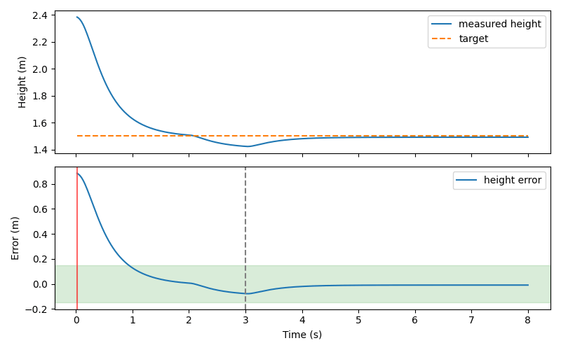

无人机定高日志误差与抗扰恢复时间评估
本模块从 CSV 独立计算定高误差和扰动结束后的恢复时间。输入只需时间、实测高度和目标高度三列，既可用于神经网络控制，也可用于传统反馈对照。默认附带一次 MuJoCo 阵风场景 PPO 飞行日志，运行不需要重新训练或安装仿真器。

环境与运行
Python 3.10/3.11、NumPy、Matplotlib、Pillow；ROS 部分采用 Ubuntu 22.04 / Humble。
cd src/air/uav_hover_log_eval
python3 -m pip install -r requirements.txt
python3 main.py
python3 main.py --input /path/to/flight.csv --output outputs/flight
# 换扰动参数（默认 3.0 s / 1.0 s / 0.15 m / 0.5 s）
python3 main.py --disturbance-end 3.0 --disturbance-window 1.0 \
--tolerance 0.05 --hold 0.5
输出为 summary.json、误差曲线 PNG 和 GIF。输入异常会明确报错，不把缺失或非法记录静默当作零误差。
输入与指标
CSV 必须包含 time_s,height_m,target_m，允许额外列；时间单位秒，高度单位米。至少两条记录，三列必须为有限数，时间严格递增。附带日志的来源与生成方式见 data/README.md。
误差按采样点等权统计，不进行时间加权。非均匀采样日志比较时应先统一采样条件。
五个口径参数都以命令行开关和 ROS 参数暴露，默认值如下：
| 参数 | 默认值 | 含义 |
|---|---|---|
--disturbance-end / disturbance_end |
3.0 s | 扰动结束时刻，恢复时间从此起算 |
--disturbance-window / disturbance_window |
1.0 s | 扰动窗口长度，用于统计窗口峰值偏差 |
--tolerance / tolerance |
0.15 m | 恢复判定的容差带半宽 |
--hold / hold_s |
0.5 s | 确认恢复所需的连续保持时间（秒） |
--max-gap / max_gap_s |
0.05 s | 最大相邻采样间隙，默认适用于 50 Hz 日志 |
恢复时间从 disturbance_end 起算：绝对误差进入容差带后，连续维持至少 hold_s 才确认恢复，返回首次合格区段起点与扰动结束时刻的差值。相邻间隔超过 max_gap_s 时重新计时；没有足够样本确认时返回 JSON null。更低频率的日志需显式调整最大间隙。
disturbance_peak_m 是扰动窗口内的峰值偏差；error_left_tolerance 标记扰动结束后的已观测误差是否超出容差带。若误差始终在带内，恢复值只反映首个有充分后续样本支持的区段起点，可能为零或一个采样周期，不代表全部误差已消除；样本覆盖不足时仍为 null。
tail_ratio 为末 1 s 已观测样本中落入容差带的比例。tail_covered 要求该窗口至少覆盖 0.95 s，且所有相邻间隙不超过 max_gap_s；tail_within_tolerance 还要求这些样本全部在带内。比例为 100% 本身不能证明尾段稳定。complete_8s_episode 要求首样本位于 [0, 0.05] s、末样本不早于 7.95 s，且全段没有超限间隙，仅表示采样覆盖符合此规则。
附带日志结果
样本来自 uav_vertical_ppo 的 gust 场景、评估种子 101：2–3 s 受到 1.5 N 向下外力，目标高度 1.5 m；仅此一个回合。
| 指标 | 数值 |
|---|---|
| 采样数 | 400 |
| 记录时长 | 7.98 s |
| RMSE | 0.186642 m |
| MAE | 0.078907 m |
| 最大绝对误差 | 0.884181 m |
| 扰动窗口峰值偏差（2–3 s） | 0.076958 m |
| 扰动后是否离开 0.15 m 容差带 | 否 |
| 恢复时间 | 0.02 s（等于一个采样周期，见下） |
| 末 1 s 容差内样本占比 | 100% |
| 完整 8 s 回合 | 是 |
这份日志上的 0.02 s 不代表控制器在 0.02 s 内抑制了扰动：1.5 N 阵风只造成 0.077 m 的峰值偏差，扰动结束后的样本没有超出 0.15 m 容差带，所以"首次进入容差带"发生在扰动结束后的第一个采样点，数值只等于采样周期。容差改宽到 0.40 m 时仍是 0.02 s，收紧到 0.05 m 则变成 0.40 s——它主要由容差和采样周期决定，与控制器性能关系不大。评价抗扰能力应看 disturbance_peak_m；要得到有信息量的恢复时间，需要加大扰动或收紧容差。
指标包含初始高度收敛过程；不能直接与去掉起始过渡段的稳态误差比较。
ROS 2 发布
source /opt/ros/humble/setup.bash
cd ~/ros2
colcon build --packages-select uav_hover_log_eval
source install/setup.bash
ros2 launch uav_hover_log_eval main.launch.py
ros2 topic echo /uav/hover_metrics --once
# 换口径参数
ros2 launch uav_hover_log_eval main.launch.py tolerance:=0.05 max_gap_s:=0.05
节点从 log_path 参数指定文件计算一次，以 1 Hz 发布 JSON std_msgs/String 到 /uav/hover_metrics；口径参数为 disturbance_end、disturbance_window、tolerance、hold_s、max_gap_s，均支持 launch 的 参数名:=值 写法。这是离线日志摘要的 ROS 发布，不是在线逐帧估计；发布期间修改 CSV 不会自动重载，需重启节点。
源码与验证
metrics.py 负责读取和统计，cli.py 提供统一入口与曲线，ros_node.py 发布摘要。测试覆盖手算误差、连续恢复、容差变化、稀疏日志、尾段缺口、可调采样间隙、非法数值与逆序时间。Ubuntu 22.04 / Humble 中构建、安装后 launch 与实际话题接收通过；未验证真机。
使用声明
使用 ChatGPT / Codex 辅助实现与文档整理；提交者负责审阅、理解并对提交内容负责。